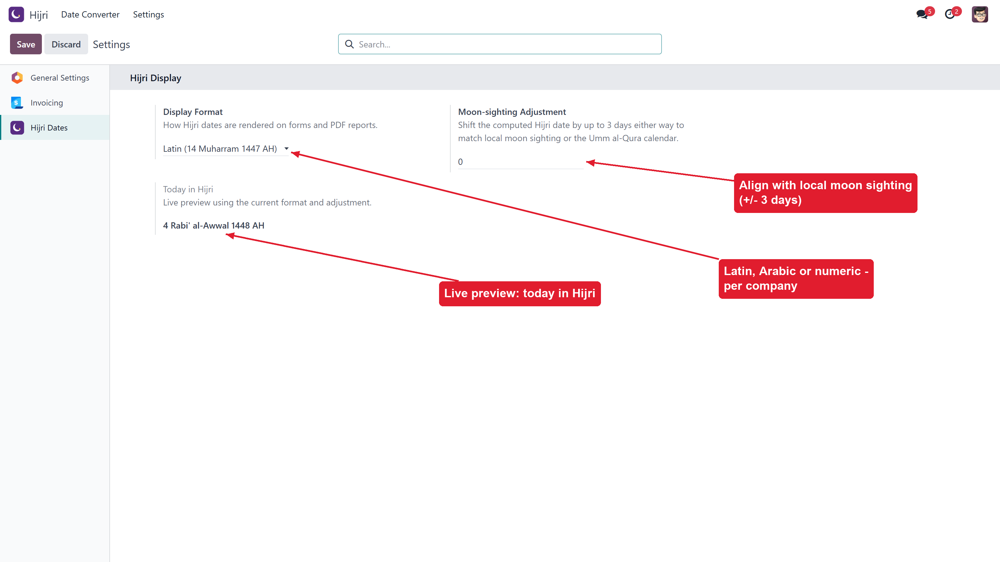
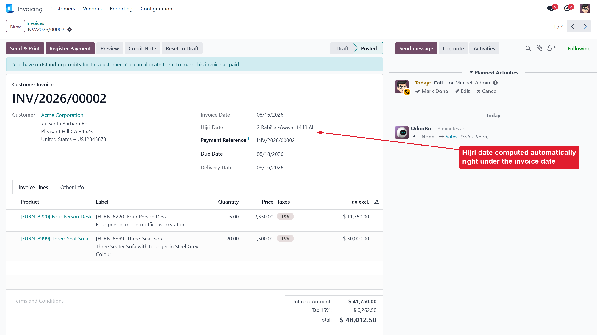
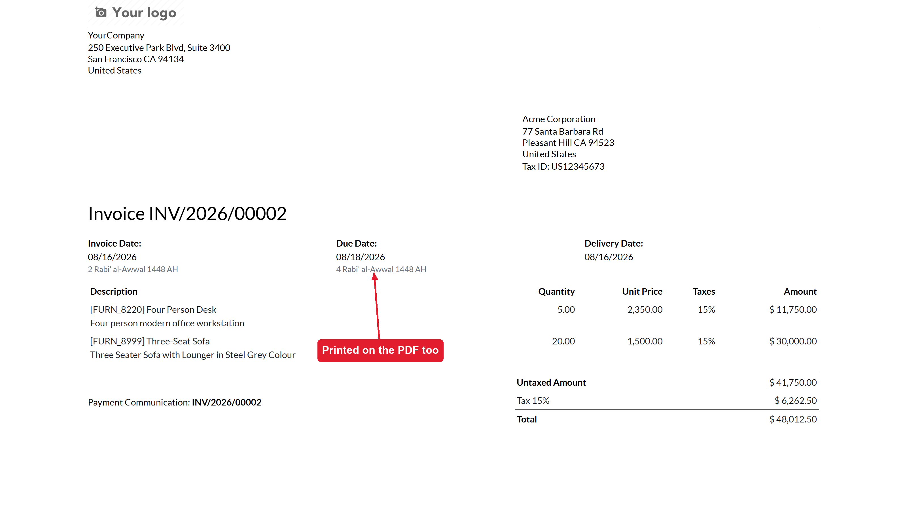
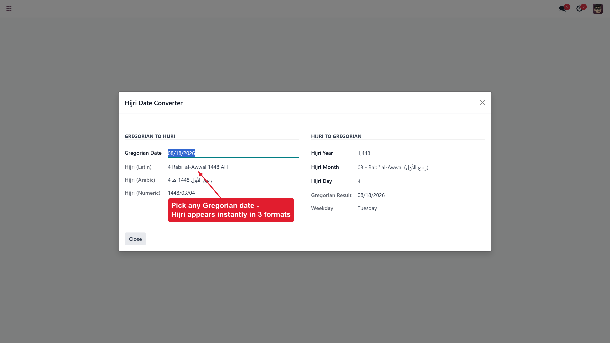
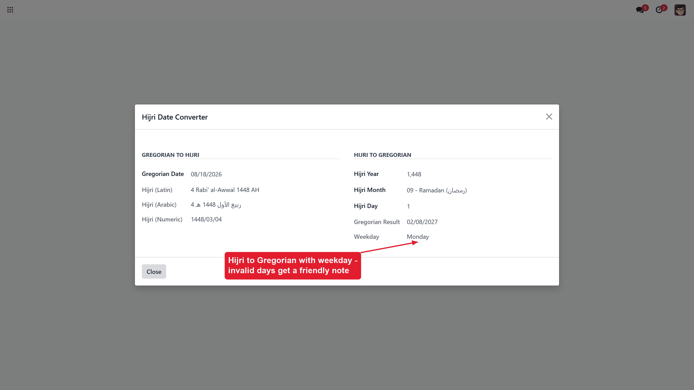
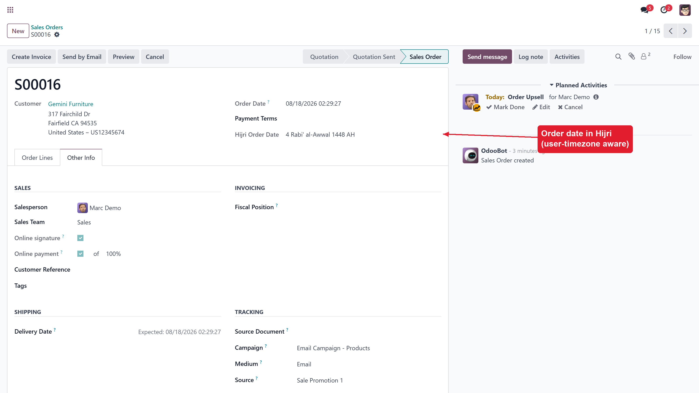

Hijri (Islamic) dates beside every Gregorian date — on invoices, payments and quotations, on their PDF reports, and in a live two-way date converter. Works on Odoo 17, 18 and 19, Community & Enterprise. No external libraries, no JavaScript.
|
On the documents Invoice, payment and sale order forms show the Hijri date right beside the Gregorian one — computed automatically, always in sync. |
On the PDFs too Invoice and quotation PDF reports print the Hijri date under each Gregorian date — ready for customers and authorities. |
Moon-sighting aware A per-company adjustment of ±3 days aligns the computed date with local moon sighting or the Umm al-Qura calendar. |
Latin transliteration, Arabic script or numeric — per company, with a live “today” preview while you configure.

The invoice form shows the Hijri date under the invoice date. Payments and quotations get the same treatment.

Invoice date and due date both carry their Hijri equivalent on the printed document.

Convert as you type: Gregorian to Hijri in three formats at once, and Hijri to Gregorian with the weekday. Impossible days get a friendly note instead of an error.


The order date in Hijri, converted in the user’s timezone.

Need a Hijri date on any other model? Inherit the bundled mixin and add a computed Char field that calls self._hijri_format(record.date). The tabular conversion engine (Julian Day Numbers, 30-year leap cycle) is pure Python with zero dependencies and is round-trip safe across the ±3-day adjustment.
Supports Odoo 17 / 18 / 19 • Community & Enterprise • © Mohamed Saied